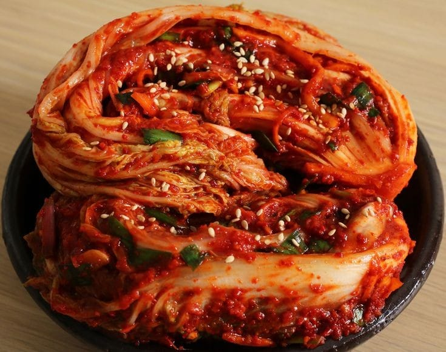

Ingredients
Makes about 8 pounds (3.6 kg) of KimchiFor salting cabbage:
6 pounds (about 2.7 kg) napa cabbage
½ cup Kosher salt (2.5 ounces: 72 grams)
For making porridge:
2 cups water
2 tablespoons sweet rice flour (aka glutinous rice flour)
2 tablespoons Turbinado sugar (or brown or white sugar)
Vegetables:
2 cups Korean radish matchsticks (or daikon radish)
1 cup carrot matchsticks
7 to 8 green onions (scallions), chopped
1 cup chopped Asian chives (buchu), optional (substitute with 3 green onions, chopped)
1 cup water dropwort (minari), optional
Seasonings and spices:
½ cup garlic cloves (24 garlic cloves), minced
2 teaspoon ginger, minced
1 medium onion, minced
½ cup fish sauce
¼ cup fermented salted shrimp (saeujeot) with the salty brine, chopped
2 cups red pepper flakes (gochugaru)
Directions
- Prepare and salt the cabbage.
- If the cabbage cores stick out too much, trim them off with your knife over your cutting board.
- To split a cabbage in half without shredding the densely packed leaves inside, first cut a short slit in the base of the cabbage, enough to get a grip on either half, and then gently pull the halves apart so the cabbage splits open.kimchi_cut cabbage.
- Cut a slit through the core of each half, 2 inches above the stem. You want the cabbage leaves to be loose but still attached to the core.napa cabbage_cut.
Dunk the halves in a large basin of water to get them wet. Sprinkle salt between the leaves by lifting up every leaf and getting salt in there. Use more salt closer to the stems, where the leaves are thicker.Salting cabbagecabbage_salting.
- Let the cabbages rest for 2 hours. Turn over every 30 minutes, so they get well salted. From time to time you can ladle some of the salty water from the bottom of the basin over top of the cabbages if you want to.kimchi_cabbage salting kimchi_cabbage salting.
- After 2 hours, wash the cabbage halves a few times under cold running water. Giving them a good washing, to remove the salt and any dirt. As you wash, split the halves into quarters along the slits you cut into earlier. Cut off the cores, give them a final rinse, and put them in a strainer over a basin so they can drain well.
- kimchi-cabbage wash While the cabbage is salting for 2 hours, and in between the times you’re turning it over, you can make the porridge:
- Combine the water and the sweet rice flour in a small pot. Mix well with a wooden spoon and let it cook over medium heat for about 10 minutes until it starts to bubble. Add the sugar and cook 1 more minute, stirring. Remove from the heat and let it cool off completely.
- Pour cooled porridge into a large mixing bowl. Add garlic, ginger, onion, fish sauce, fermented salted shrimp, and hot pepper flakes. Mix well with the wooden spoon until the mixture turns into a thin paste.salted fermented shrimp (saeujeot: 새우젓)kimchi_seasoningskimchi_paste kimchi paste.
- Add the radish, carrot, and green onion, plus the Asian chives (or more green onions) and the water dropwort if you’re using them. Mix well.Kimchi making kimchi paste kimchi paste.
Make kimchi
In a large bowl, spread some kimchi paste on each cabbage leaf. When every leaf in a quarter is covered with paste, wrap it around itself into a small packet, and put into your jar, plastic container, or onggi. Eat right away, or let it sit for a few days to ferment.
